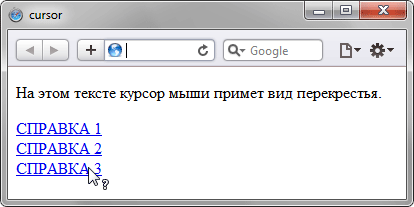

Описание
Устанавливает форму курсора,
когда он находится в пределах элемента.
Вид курсора зависит от операционной системы
и установленных параметров.
Прежде чем воспользоваться
возможностью переделать вид курсора,
решите, а будет ли он использоваться к месту.
Многих пользователей подобные изменения
могут ввести в заблуждение,
когда, например,
вместо традиционной руки,
появляющейся при наведении на ссылку,
возникает нечто другое.
В большинстве случаев,
лучше оставить все как есть.
Синтаксис
cursor:
[url('путь к курсору'),]
[
auto |
crosshair |
default |
e-resize |
help |
move |
n-resize |
ne-resize |
nw-resize |
pointer |
progress |
s-resize |
se-resize |
sw-resize |
text |
w-resize |
wait |
inherit
]
Значения
url
Позволяет установить свой собственный курсор, для этого нужно указать путь к файлу с курсором.
Позволяет установить свой собственный курсор, для этого нужно указать путь к файлу с курсором.
auto
Вид курсора по умолчанию для текущего элемента.
Вид курсора по умолчанию для текущего элемента.
inherit
Наследует значение родителя.
Наследует значение родителя.
Остальные допустимые значения
приведены в таблице.
| Значение | Тест | Пример |
|---|---|---|
| default | Наведите курсор | P {cursor: default} |
| crosshair | Наведите курсор | P {cursor: crosshair} |
| help | Наведите курсор | P {cursor: help} |
| move | Наведите курсор | P {cursor: move} |
| pointer | Наведите курсор | P {cursor: pointer} |
| progress | Наведите курсор | P {cursor: progress} |
| text | Наведите курсор | P {cursor: text} |
| wait | Наведите курсор | P {cursor: wait} |
| n-resize | Наведите курсор | P {cursor: n-resize} |
| ne-resize | Наведите курсор | P {cursor: ne-resize} |
| e-resize | Наведите курсор | P {cursor: e-resize} |
| se-resize | Наведите курсор | P {cursor: se-resize} |
| s-resize | Наведите курсор | P {cursor: s-resize} |
| sw-resize | Наведите курсор | P {cursor: sw-resize} |
| w-resize | Наведите курсор | P {cursor: w-resize} |
| nw-resize | Наведите курсор | P {cursor: nw-resize} |
В зависимости от операционной системы
и ее настроек вид курсора
может отличаться
от приведенных в таблице.
При добавлении курсора из файла
синтаксис несколько видоизменится.
cursor:
url('путь к курсору1'),
url('путь к курсору2'),
...,
<ключевое слово>
Через запятую допускается указывать
несколько значений url,
в этом случае браузер попытается
открыть первый файл с курсором
и если это по каким-либо причинам
не получится,
перейдет к следующему файлу.
Список обязательно заканчивается
ключевым словом,
например,
auto или pointer.
Пример 1
<!DOCTYPE html>
<html>
<head>
<meta charset="utf-8">
<title>cursor</title>
<style>
.cross {
cursor: crosshair;
}
.help {
cursor: help;
}
</style>
</head>
<body>
<div class="cross">
На этом тексте курсор мыши
примет вид перекрёстья.
</div>
<div>
<a href="help.html"
class="help">
СПРАВКА 1
</a>
<br>
<a href="help.html"
class="help">
СПРАВКА 2
</a>
<br>
<a href="help.html"
class="help">
СПРАВКА 3
</a>
</div>
</body>
</html>
Результат данного примера
показан на рисунке ниже.

Пример 2
<!DOCTYPE html>
<html>
<head>
<meta charset="utf-8">
<title>cursor</title>
<style>
a {
cursor:
url(images/sniper.cur),
pointer;
}
</style>
</head>
<body>
<div>Обычный текст</div>
<div>
<a href="1.html">
Ссылка 1
</a>
<a href="2.html">
Ссылка 2
</a>
<a href="3.html">
Ссылка 3
</a>
</div>
</body>
</html>